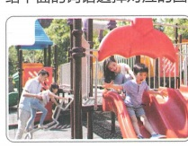
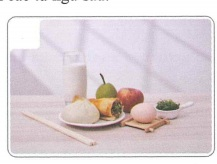
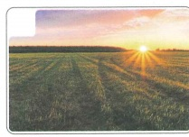
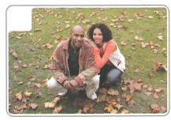
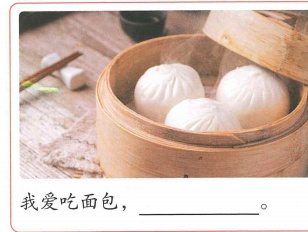
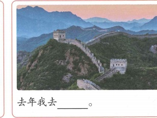
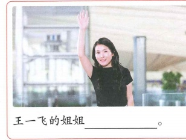
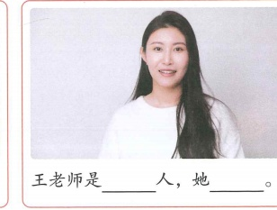

大兴机场见！
Hẹn gặp ở sân bay Đại Hưng!
17 từ mới · 3 bài khóa · kế hoạch du lịch · văn hóa bàn ăn · Bắc Kinh
🔥 Khởi động
Mỗi hình là một câu. Ảnh được giữ nguyên khung hình để không bị cắt mất nội dung.




📚 Từ vựng · Bài khóa 1
🎧 Bài khóa 1
Ngữ cảnh: Lý Văn mời Trần Thiên Trung và Bạch Gia Nguyệt thưởng thức món ăn Trung Quốc tại nhà mình.
📖 Câu hỏi theo bài khóa
（1）白家月爱吃哪个菜？ Bạch Gia Nguyệt thích ăn món nào?
（2）李文做饭好吃不好吃？ Lý Văn nấu ăn có ngon không?
🧠 Ngữ pháp 1 · Câu ghép đẳng lập “……，还/也……”
Cấu trúc
Dùng để nối hai vế có quan hệ logic và cấu trúc tương đối đối xứng.
Ví dụ trong sách
我喜欢这个，也喜欢那个。
王老师是北京人，李文也是北京人。
我喜欢喝中国茶，还喜欢吃中国菜。
Luyện tập
Hoàn thành: 我喜欢北京，______喜欢西安。
这些菜很好吃，______很好看。
📚 Từ vựng · Bài khóa 2
🎧 Bài khóa 2
Ngữ cảnh: Mọi người vừa ăn vừa thảo luận về kế hoạch kỳ nghỉ tại nhà Lý Văn. Annie kể năm ngoái cô và bạn trai đã đi Tây An, năm nay muốn đi Bắc Kinh; Bạch Gia Nguyệt cũng muốn đi Bắc Kinh.
📖 Câu hỏi theo bài khóa
（1）安妮今年想去哪儿？ Annie năm nay muốn đi đâu?
（2）前几年白家月去了哪儿？ Mấy năm trước, Bạch Gia Nguyệt đã đi đâu?
📚 Từ vựng · Bài khóa 3
🎧 Bài khóa 3
Ngữ cảnh: Bạch Gia Nguyệt, Annie và cô Vương nói về việc đến Bắc Kinh và đón nhau ở sân bay Đại Hưng.
📖 Câu hỏi theo bài khóa
（1）大兴机场在哪儿？ Sân bay Đại Hưng ở đâu?
（2）王老师的姐姐可以去接白家月和安妮吗？ Chị gái của cô Vương có thể đi đón Bạch Gia Nguyệt và Annie không?
✏️ Bài tập tổng hợp · Chọn từ
A 爱 B 时间 C 早不早 D 都 E 飞机
🖼️ Bài tập tổng hợp · Miêu tả tranh
Mỗi ảnh là một câu riêng.




🎭 Hoạt động trên lớp · Đóng vai
Ba người lần lượt đóng vai 李文、陈天中、白家月. Lý Văn mời hai bạn đến nhà chơi và cùng làm món ăn Trung Quốc.
陈天中：我有时间。
白家月：我也有时间。
李文：太好了！你们都来我家吧，我们做中国菜吃，怎么样？
✅ Tổng kết Bài 15
- 17 từ mới + 西安、北京、大兴机场.
- 3 bài khóa dùng đúng audio 15-1 / 15-3 / 15-5, có Play + Pause.
- Ngữ pháp: câu ghép đẳng lập “……，还/也……”.
- Diễn đạt kế hoạch du lịch, thời gian bay và việc đón ở sân bay.
- Văn hóa bàn ăn và hoạt động đóng vai.